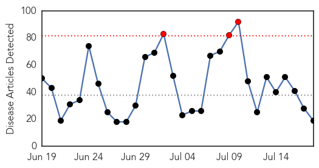
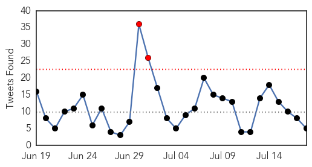
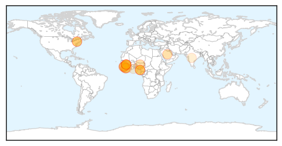
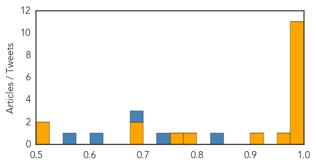
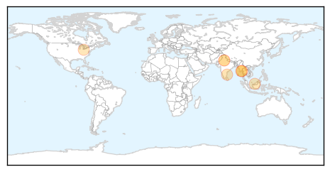

Ebola
30-Day Web Trend
3 alerts, 0 warnings

30-Day Twitter Trend
2 alerts, 0 warnings

Article Locations
Article Confidences
Top Articles:
- 1.000
- The Ebola virus has spread to Senegal as the deadliest outbreak in history gets worse
- 0.999
- $3.4 billion was just pledged to preventing another Ebola outbreak – but it might not be enough
- 0.995
- Liberia says 4 remaining Ebola patients have recovered
- 0.993
- Sierra Leone envoys in Makkah pray for Ebola eradication
- 0.992
- President In Equatorial Guinea
- 0.988
- Nigeria Leads AU to International Confab on Ebola, Articles
- 0.985
- Ebola hits Montserrado
- 0.981
- Lockdown ends in Sierra Leone
- 0.981
- Hospitals Improvise on Safety to Treat Ebola Patients
- 0.980
- Mugabe, Grace arrives in Malabo, Equatorial Guinea
- 0.978
- President Mugabe arrives in Equatorial Guinea
- 0.975
- Koroma arrives home from UN to more bad news of mismanagement
- 0.922
- Thirty people a week are infected with Ebola as donors pledge more than five billion dollars
- 0.775
- MUGABE AND GRACE IN EQUATORIAL GUINEA newsdzeZimbabweNewsdzeZimbabwe
- 0.767
- Welcome to the Expotimes News
- 0.696
- UNHCR clarifies Ivorian Refugees story
- 0.680
- Zambia National Broadcasting Corporation
- 0.517
- Panasonic's Solar Lanterns Donated to UNDP Have Begun to be Distributed to Ebola Affected Regions
- 0.506
- Cabinet Secretary addresses policy analysts in Ghana
Top Tweets:
- 0.845
- Sierra Leone envoys in Makkah pray for Ebola eradication - Arab News http://t.co/rHxfI3w0zm ebola EVD
- 0.749
- Liberia Muslims observe Eid amid new Ebola outbreak - VideoNewsUs http://t.co/VOH6QW5iTt ebola EVD
- 0.679
- Liberia Muslims observe Eid amid new Ebola outbreak Anadolu Agency - Anadolu Agency http://t.co/Girmo9HcFV ebola EVD
- 0.600
- We were not told to halt Ebola Vaccine trial – FDA - GhanaWeb http://t.co/E2w1Wk3jtm ebola EVD
- 0.556
- Nigeria Leads AU to International Confab on Ebola - THISDAY Live http://t.co/SnjbhG7s1e ebola EVD
Dengue Fever
30-Day Web Trend
6 alerts, 3 warnings

30-Day Twitter Trend
2 alerts, 0 warnings

Article Locations
Article Confidences

Top Articles:
- 0.992
- Health Ministry calls for public to help prevent spread of dengue fever - Myanmar
- 0.987
- Myanmar: Health Ministry calls for public to help prevent spread of dengue fever
- 0.882
- Of 93 Percentage Victims only 1 Percentage aware of Dengue
- 0.856
- ‘Sibu base for state task force to fight dengue menace’ – BorneoPost Online
- 0.849
- AIIMS wants to check drop in platelets as dengue returns
- 0.823
- 4 mosquito bite prevention tips
- 0.609
- Rheumatoid Arthritis Neck And Shoulder Pain California Ventura
- 0.565
- JP Nadda pays surprise visit to Safdarjung Hospital, reviews Dengue preparedness
Top Tweets:
-
No tweets found for Jul 18, 2015